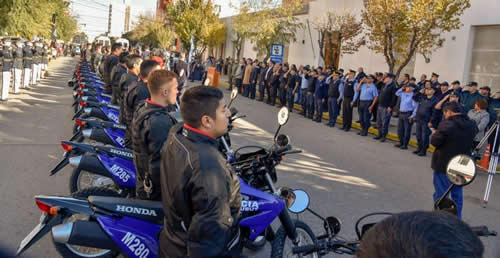

Real Chubut - Agencia de Noticias


Gómez: "Es histórico que una Jefatura de Policía haya podido sobrellevar un plan estratégico junto al Poder Ejecutivo"

Así lo indicó el Jefe de la Policía del Chubut, al encabezar junto al gobernador, Mariano Arcioni, la presentación del nuevo parque moto vehicular de la Fuerza. Se entregaron las primeras 60 de 120 motos destinadas a las Unidades Regionales de Comodoro Rivadavia, Trelew, Esquel, Puerto Madryn y Área Operaciones Rawson, además de cascos e indumentaria.
El gobernador del Chubut, Mariano Arcioni, presidió este miércoles en la Unidad Regional de Trelew, la presentación del nuevo parque moto vehicular para la Policía de la provincia. Se trata de 60 motocicletas Honda, modelo XR250 Tornado 0KM, cascos e indumentaria destinadas al patrullaje preventivo del Personal policial a lo largo de todo el territorio provincial.
Estuvo acompañado por el ministro de Gobierno, Federico Massoni, en representación del Municipio de Trelew, el secretario de Gobierno, Eduardo Maza; el Jefe de la Policía del Chubut, Comisario general Miguel Gómez; el subjefe comisario general Néstor Gómez Ocampo, los directores que integran la Plana Mayor Policial, el comisario mayor Ariel González (Jefe de la Unidad Regional de Trelew), el comisario mayor Victor Acosta (Jefe de la Unidad Regional de Puerto Madryn), el comisario mayor Ricardo Cerda (Jefe de la Unidad Regional de Comodoro Rivadavia), el comisario mayor Rodolfo Hess (Jefe de la Unidad Regional de Esquel) junto a representantes de Fuerzas de Seguridad con asiento en la zona y personal policial en actividad y en situación de retiro, los cadetes del Instituto Superior de Formación Policial n° 811 'Juan Gustavo Boyd' e invitados especiales.
El Gobernador junto a funcionario hizo entrega de elementos e indumentaria al personal de las Unidades Regionales de Comodoro Rivadavia, Puerto Madryn, Esquel, Trelew y Área operaciones Rawson.
Luego de la entrega y al referirse a los presentes, Arcioni destacó que "son las primeras 60 de 120 destinadas a Trelew, Comodoro Rivadavia, Esquel, Puerto Madryn y Rawson con todo el equipamiento moderno a la vista. Parte del uniforme se ha realizado a través de la sastrería policial, que había quedado sin ningún tipo de función y luego de comprar los recursos necesarios vuelve a funcionar".
"Quiero felicitar a cada uno de ustedes por aprobar el curso pero en especial a la agente Godoy que ha sido la única mujer que ha aprobado el mismo y significa la importancia y el rol que deben tener las mujeres y la igualdad de oportunidades. Porque la vocación de servicio es la que tiene cada uno sin importar el género. El juramento que han prestado es igual para todos", remarcó.
Arcioni agregó que "nos hemos propuesto desde el primer día el reconocimiento a ustedes no sólo en lo salarial, siendo la mejor policía del país en cuanto al reconocimiento salarial, cuando durante muchos años han quedado relegado. Uno sabe el significado de ese uniforme, de cuidar y velar por la seguridad de cada ciudadano. Por eso implementamos un plan fuerte en materia salarial, capacitación, jerarquización, reconocimiento y equipamiento porque tenemos la obligación de acompañar su juramento".
"Esto es una demostración de lo que se puede hacer cuando hay planificación, compromiso y amor por la fuerza, no hay nada librado al azar. Todas las acciones llevadas adelantes están planificadas", concluyó.
Hecho histórico
En tanto, el jefe de la Policía del Chubut, Comisario General, Miguel Gómez, expresó: "Este es un hecho histórico. Nos reúne un hecho trascendental. Como Jefe de Policía debo resaltar que más que histórico, es histórico que una jefatura haya podido sobrellevar un plan estratégico junto al poder político al que nos debemos. Me refiero a que paso a paso cumplimentamos un plan diagramado al inicio de la gestión para brindar seguridad".
"Y no me vengo a referir a los grandes logros como el mejoramiento salarial que como todos sabemos, somos la mejor policía paga del país. O la incorporación de 500 jóvenes en los distintos Centros de Formación de la provincia, sino que me voy a referir a esto que hemos recientemente adquirido chalecos modernos, versátiles, que son de una conveniencia operativa, hemos adquirido pistolas de última generación en el marco de un proceso histórico", enumeró Gómez.
Agregó: "Hemos finalizado un curso de capacitación que procura instruir, capacitar, calificar, seleccionar al hombre para esta función tan riesgosa. Y hoy este hecho trascendente de brindarles una herramienta que ha demostrado a lo largo del tiempo ser la mejor. Como Jefe de Policía agradezco al Gobernador por haber revalorizado al personal y demostrar con hechos concretos una política de reequipamiento de la fuerza policial", concluyó.
"Es la primera vez que se piensa en el personal policial de motos"
El director de Recursos Materiales, Paulo Heredia, manifestó: "Estamos ante un hecho histórico de la Policía del Chubut, donde con gran esfuerzo se ha trabajado en la compra de las motos e indumentaria que debe llevar el personal policial. Se ha consultado al personal que trabaja en la calle para afrontar esta compra tratando de adaptarse en base a las necesidades. La indumentaria compuesta por pantalón, chaqueta, guantes y casco ha sido consensuado con la totalidad del personal".
"Es la primera vez que se piensa en el personal policial que trabaja con las motos. Este tipo de indumentaria es para las inclemencias climáticas, equipos desmontables, cómodos. Quiero agradecer el esfuerzo del personal administrativo que constantemente piensan y trabajan para que la seguridad pública sea un éxito", señaló.
Características
En cuanto a las características técnicas de las motos y su utilidad para la función policial, el director de Seguridad, comisario general Paulino Gómez precisó que: "Las Divisiones Motos están presentes en Trelew y otras ciudades de la provincia. Esta incorporación de motos Honda Tornado de 250 cc. Es un logro sin precedentes. Es monocilíndrica, con un motor de 4 tiempos, 23 caballos de fuerza, caja de con 6 cambios, con buena autonomía de combustible y pesa 135 kgs. Es una moto polivalente, durable y diseñada para atender las necesidades del servicio exigente por las intervenciones de la Fuerza Policial. Cada una de estas unidades valen $ 216.000".
"Agradezco al Subjefe de Policía que me dio la oportunidad de hablar en este acto porque soy usuario de las motos desde los 12 años, soy un apasionado del tema y –además- mecánico. En tal sentido, participé de la selección de las motos y del proceso licitatorio. Conté con el respaldo pleno del ministro Massoni quien me dio la instrucción de adquirir las mejores motos para la Policía", indicó Gómez.
"Estos vehículos tienen 3 décadas en el mercado y cuentan con un gran prestigio y durabilidad. Para recordar la última compra de motos de estas características, nos tenemos que remontar al 2005 y todavía funcionan. Todo esto es una prueba que el Gobernador Arcioni, el ministro Massoni y la Jefatura quieren las mejores herramientas para la Fuerza y tendrá consecuencias en una mayor seguridad a la sociedad en el combate del delito. Quiero reconocer al Suboficial Dino Tinello por haber puesto su vida al servicio de sus funciones en la División Motos", concluyó.
--
Subsecretaría de Información Pública del Chubut
PUBLICIDAD